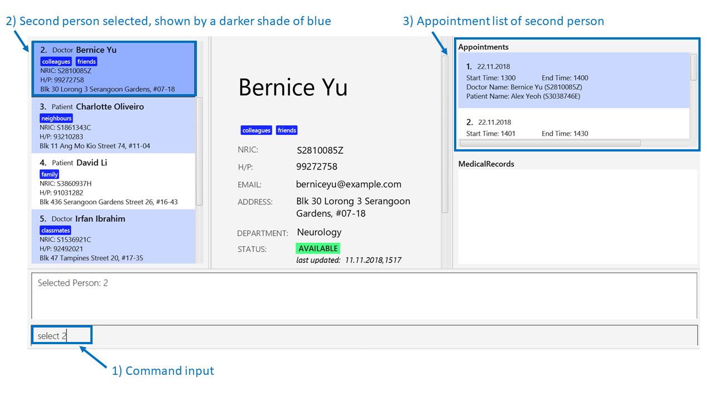
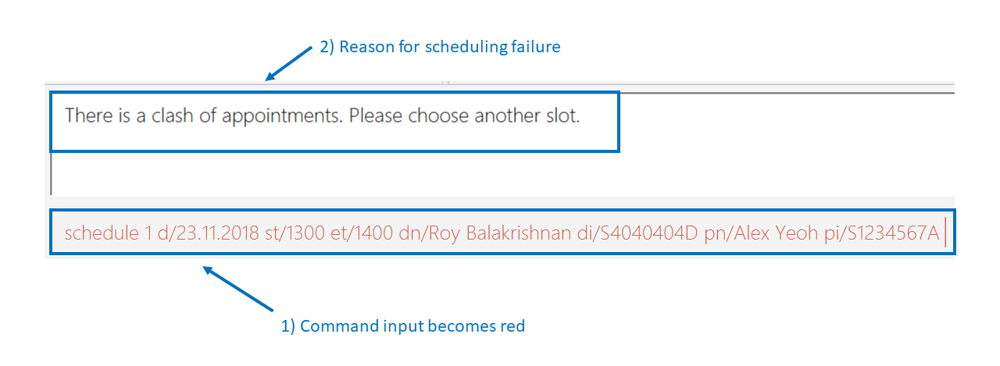

1. PROJECT: One Life
1.1. Overview
This project portfolio details my key contributions to Project One Life.
One Life is a desktop medical management application designed by me and my groups mates for a software engineering module in National University of Singapore (NUS). It aims to improve the efficiency of administrative processes in medical institutes. The project was created under the constraint of the fact that the user only interacts with the application through a Command Line Interface (CLI). It is written in Java, and has about 10 kLoC.
The main features of the project are:
-
The ability to display and schedule medical appointments.
-
The ability to display and update medical records.
-
The ability to display doctor and patient details.
-
The ability to find persons by specifying related keywords.
-
The ability to enter commands using intuitive command prompts instead of CLI for new users.
1.2. Summary of Contributions
-
Major enhancement: added the ability to schedule and display medical appointments
-
What it does: Allows the user to schedule appointments at a specified time.
-
Justification: This feature improves the product significantly because a user is able to display current appointments and schedule appointments. This is a key part of medical operations in a hospital. Further checks are available to inform the user if they keyed in incorrect appointment details.
-
Highlights: This enhancement drastically improved the ability of the application to assist medical processes, specifically in the area of scheduling appointment. The implementation too was challenging as it required a brand new command to be created.
-
-
Code contributed: [Functional code] [Test code]
-
Other contributions:
-
Project management:
-
Managed releases
v1.1-v1.4(4 releases) on GitHub -
Set up travis for running tests for the code base
-
Set up auto publishing of docs for travis
-
-
Enhancements to existing features:
-
Documentation:
-
Did cosmetic tweaks to existing contents of the User Guide: #14
-
-
Community:
-
2. Contributions to the User Guide
Given below are sections I contributed to the User Guide. They showcase my ability to write documentation targeting end-users. |
2.1. Displaying medical appointments : select
Displays a list of medical appointments that are currently scheduled for the specified person.
Format: select INDEX
Examples:
-
listdisplays the list of persons as shown in the figure below. Figure 1. Display list diagram
Figure 1. Display list diagramselect 2selects the 2nd person in the database and display the appointments of that person as shown in the figure below.Figure 2. Display appointment diagram -
find Betsy
select 1
Selects the 1st patient in the results of thefindcommand and display the appointments.
2.2. Scheduling medical appointments : schedule
Schedules a patient/doctor for a medical appointment at a specific date and time.
Format: schedule INDEX d/DATE st/START_TIME et/END_TIME dn/DOCTOR_NAME di/DOCTOR_NRIC pn/PATIENT_NAME pi/PATIENT_NRIC
| Overlapping of timing with existing appointments is considered a clash. E.g. 1300-1301 and 1301-1302 is a clash due to 1301. |
Examples:
-
schedule 1 d/23.11.2018 st/1300 et/1400 dn/Jack di/S1234567B pn/John Doe pi/S1234567A
SchedulesJohn Doefor an appointment with doctorJackon the 23nd of November 2018 from 1pm to 2pm.An example of a successful schedule is shown in the figure below.
 Figure 3. Successful schedule diagram
Figure 3. Successful schedule diagramAfter an appointment is successfully scheduled, the appointment list as shown below will be updated.
 Figure 4. Change in appointment list
Figure 4. Change in appointment listAn example of an unsuccessful schedule is shown in the figure below.
Figure 5. Unsuccessful schedule diagram
3. Contributions to the Developer Guide
Given below are sections I contributed to the Developer Guide. They showcase my ability to write technical documentation and the technical depth of my contributions to the project. |
3.1. Schedule command feature
3.1.1. Current implementation
The scheduling appointment mechanism is facilitated by ScheduleCommandParser, ScheduleCommand, Appointment and AppointmentManager.
ScheduleCommand extends from Command and ScheduleCommandParser implements Parser.
The key operation implemented is ScheduleCommand#execute.
Given below is an example usage scenario and how the schedule command mechanism behaves at each step.
Step 1. The user wants to schedule an appointment. User proceeds to fill in the details behind the respective prefixes.
For example: schedule 1 d/23.11.2018 st/1300 et/1400 dn/Jack di/S1234567B pn/John Doe pi/S1234567A
Step 2. The user executes the ScheduleCommand which calls the ScheduleCommandParser.
ScheduleCommandParser will parse the inputs and return a ScheduleCommand.
Step 3. ScheduleCommand then executes.
ScheduleCommand then conducts various checks sequentially to ensure that the appointment scheduled is valid.
If it is invalid, an exception message will be thrown.
The Appointment will not be scheduled.
The order of checks conducted are displayed in the image below.
Step 4. A successful check gives 2 objects, personToEdit and Appointment object.
Program creates another Person object called editedPerson that is equal to personToEdit.
ScheduleCommand then adds Appointment to the appointmentList of editedPerson.
Lastly, ScheduleCommand replaces personToEdit with editedPerson in our model.
Step 5. XmlAdaptedPerson updates storage of appointmentList.
The following sequence diagram shows how the schedule appointment operation works:
3.1.2. Design Considerations
This section describes the pros and cons of the current and other alternate implementations of schedule.
Aspect: Command for schedule command
-
Alternative 1 (current choice): Take in the inputs for schedule appointment command using one prefix for each detail. For example:
schedule 1 d/23.11.2018 st/1300 et/1400 dn/Jack di/S1234567B pn/John Doe pi/S1234567A-
Pros: The design is consistent with the other commands in the application.
-
Cons: It requires the user to type more when scheduling an appointment.
-
-
Alternative 2: Use a comma-separated long string in the command prompt to schedule an appointment. For example:
schedule 1 s/23.11.2018,1300,1400,Jack,S1234567B,John Doe,S1234567A-
Pros: The user has to type less when scheduling a command. The user is not required to type all the prefixes, he just has to type one prefix,
s/. -
Cons: The design would not be consistent with the other commands. This might confuse the user.
-
Aspect: Sorting of appointments
-
Alternative 1 (current choice): Do not sort the appointments in the ArrayList of appointments. A new appointment is added to the back of the ArrayList.
-
Pros: It is simple to check for appointment clashes. To check for appointment clashes, just loop through the ArrayList and check the new appointment against every other appointment. The simplicity is shown in code below.
public static boolean isClash(Appointment appointment, Appointment otherAppointment) { if (appointment.isClash(otherAppointment)) { return true; } return false; } -
Cons: It might not be the most efficient way.
-
-
Alternative 2: Sort the appointments in the ArrayList of appointments. Maintain a sorted list of appointments based on the date and time of appointments.
-
Pros: It might be more efficient when checking for appointment clashes. We do not need to check our new appointment against all the appointments in the ArrayList. For example we can check from the last (latest) appointment down the list until a point where the next appointment comes before this appointment. At that point we can stop checking as we know that there will be no more clashes.
-
Cons: The efficiency gain when checking for clashes might be lost due to efficiency lost due to sorting being required.
-